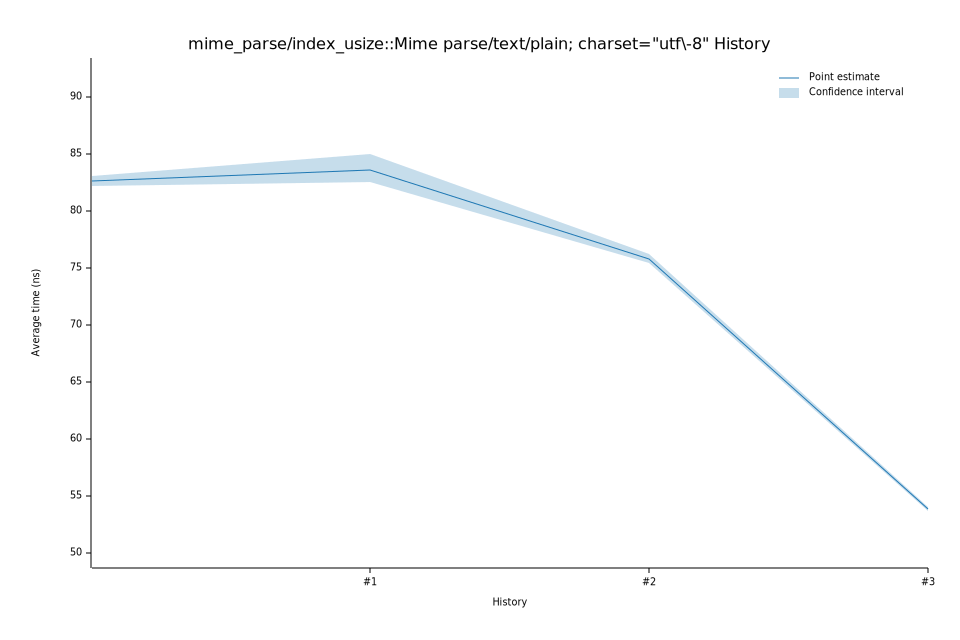

# 52025-11-08T06:59:25-08:00
|
Lower Bound |
Estimate |
Upper Bound |
| Value: |
68.59ns |
68.97ns |
69.48ns |
| Throughput: |
389.29MiB/s |
387.17MiB/s |
384.33MiB/s |
| Change in Value: |
-1.6806% |
-0.3674% |
+1.1722% |
| Change in Throughput: |
+1.7094% |
+0.3688% |
-1.1586% |
Change within noise threshold.
# 42025-11-08T06:55:18-08:00
|
Lower Bound |
Estimate |
Upper Bound |
| Value: |
69.08ns |
69.47ns |
69.93ns |
| Throughput: |
386.53MiB/s |
384.38MiB/s |
381.84MiB/s |
| Change in Value: |
+30.415% |
+31.837% |
+33.262% |
| Change in Throughput: |
-23.322% |
-24.149% |
-24.960% |
No change in performance detected.
# 32025-10-15T12:58:57-07:00
|
Lower Bound |
Estimate |
Upper Bound |
| Value: |
53.73ns |
53.89ns |
54.07ns |
| Throughput: |
496.98MiB/s |
495.46MiB/s |
493.82MiB/s |
| Change in Value: |
-31.743% |
-30.849% |
-30.105% |
| Change in Throughput: |
+46.506% |
+44.611% |
+43.072% |
No change in performance detected.
# 22025-10-14T16:08:12-07:00
|
Lower Bound |
Estimate |
Upper Bound |
| Value: |
75.41ns |
75.75ns |
76.23ns |
| Throughput: |
354.11MiB/s |
352.52MiB/s |
350.30MiB/s |
| Change in Value: |
-14.976% |
-11.245% |
-8.6058% |
| Change in Throughput: |
+17.614% |
+12.670% |
+9.4162% |
No change in performance detected.
# 12025-10-14T16:04:46-07:00
|
Lower Bound |
Estimate |
Upper Bound |
| Value: |
82.48ns |
83.56ns |
85.02ns |
| Throughput: |
323.73MiB/s |
319.58MiB/s |
314.08MiB/s |
| Change in Value: |
-2.5161% |
+1.2203% |
+6.3205% |
| Change in Throughput: |
+2.5811% |
-1.2056% |
-5.9447% |
Change within noise threshold.
# 02025-10-14T15:55:41-07:00
|
Lower Bound |
Estimate |
Upper Bound |
| Value: |
82.21ns |
82.61ns |
83.09ns |
| Throughput: |
324.83MiB/s |
323.26MiB/s |
321.38MiB/s |